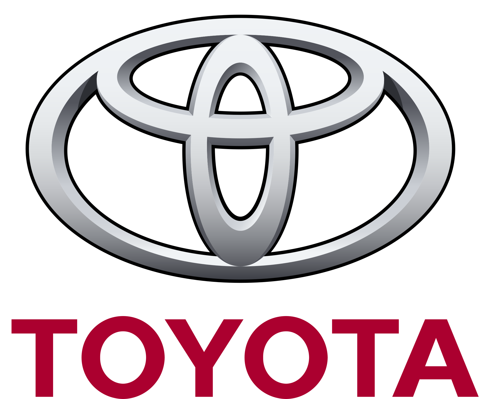

Lexus
Історія бренду
Lexus — це преміум-бренд японської компанії Toyota, який був створений у 1989
році для завоювання сегмента розкішних автомобілів. Першою моделлю стала легендарна Lexus LS 400,
яка швидко зарекомендувала себе завдяки комфорту, інноваційним технологіям і надійності. Сьогодні
Lexus пропонує широкий асортимент автомобілів, від седанів до кросоверів, відомих своїм вишуканим
дизайном, гібридними технологіями та увагою до деталей.
Опис моделей
Lexus RX 500h
Lexus RX — один із перших кросоверів преміум-класу, який став
еталоном у своєму сегменті. RX 500h —
це гібридний автомобіль із потужним двигуном, здатним забезпечити економічність і вражаючу динаміку.
У моделі є сучасна мультимедійна система, просторий салон і безліч систем безпеки, таких як
адаптивний круїз-контроль і система утримання в смузі.
Lexus ES 300h
Lexus ES — розкішний седан середнього класу. Модель 300h — це
гібридний варіант, який поєднує
ефективність і комфорт. Автомобіль відомий плавною їздою, низьким рівнем шуму і високоякісними
матеріалами в інтер'єрі. ES 300h також має просторі задні сидіння, що робить його ідеальним вибором
для тривалих подорожей.
Відгуки покупців
Анна: «Купила Lexus RX 500h кілька
місяців тому, і це найкраще рішення в моєму
житті! Комфорт під час їзди просто неймовірний, а економія пального для такого великого кросовера
мене вразила.»
Олег: «Lexus RX 500h — це автомобіль, у якому відчуваєш
себе в безпеці. Технології
допомоги водієві працюють бездоганно.»

Toyota
Історія бренду
Toyota — це японський автомобільний бренд, який був заснований у 1937 році. Спочатку компанія
спеціалізувалася на виробництві автомобільних деталей, а вже з 1936 року випустила перший автомобіль
серійного виробництва. Toyota стала відомою завдяки своїм інноваціям, економічності та надійності.
Сьогодні бренд пропонує широкий асортимент автомобілів — від економних компактних моделей до
позашляховиків і преміум-класу Lexus. Toyota відома своєю увагою до екології і постійно працює над
розвитком гібридних і електричних технологій.
Опис моделей
Toyota Corolla
Toyota Corolla — це компактний седан, який став
еталоном надійності та економічності. Він оснащений сучасними технологіями безпеки, такими як
адаптивний круїз-контроль і система попередження зіткнень. Модель має просторий інтер'єр і
відзначається низьким споживанням пального, що робить її ідеальним вибором для щоденних поїздок.
Toyota RAV4
Toyota RAV4 — один із найбільш популярних кросоверів на ринку. Ця
модель поєднує в собі стиль, потужність та економічність. RAV4 має відмінну прохідність і великий
багажник, що робить її ідеальною для подорожей і сімейних поїздок. Завдяки гібридній версії,
автомобіль також демонструє високу економічність і знижену шкоду для навколишнього середовища.
Відгуки покупців
Марина: «Toyota Corolla — це
просто ідеальний автомобіль для міста. Економія пального і чудова маневреність на дорогах роблять її
незамінною для моїх поїздок по місту.»
Ігор:«RAV4 — це мій надійний помічник у подорожах.
Просторий салон і великий багажник дозволяють брати все необхідне в поїздки, а 4WD забезпечує
відмінну прохідність.»

BMW
Історія бренду
BMW (Bayerische Motoren Werke) — німецький автомобільний бренд, заснований у 1916 році. Спочатку
компанія спеціалізувалася на виробництві авіаційних двигунів, але згодом переключилася на автомобілі
й мотоцикли. BMW завоювала світову популярність завдяки своїм інноваціям, спортивному дизайну та
високим стандартам інженерії. Зараз BMW є одним із провідних виробників автомобілів преміум-класу,
які відомі своєю динамікою водіння, передовими технологіями та розкішними інтер'єрами.
Опис моделей
BMW X5
BMW X5 — це люксовий кросовер, який поєднує в собі потужність, комфорт
і сучасні технології. Оснащений інтелектуальною системою повного приводу xDrive, він демонструє
відмінну керованість на будь-якій дорозі. Модель має просторий салон із високоякісними матеріалами,
цифрову панель приладів і передову мультимедійну систему.
BMW 3 Series
BMW 3 Series — це спортивний седан, який став символом динамічного
водіння. Завдяки високоефективним двигунам і відмінному шасі, ця модель забезпечує захопливу їзду.
Інтер'єр автомобіля поєднує сучасні технології та елегантність, а системи безпеки, такі як активний
круїз-контроль і система утримання в смузі, роблять водіння безпечним і комфортним.
Відгуки покупців
Андрій: «BMW X5 — це автомобіль, який
дарує справжнє задоволення від водіння. Просторий салон і сучасні технології забезпечують комфорт як
на коротких, так і на тривалих маршрутах.»
Тая: «Обожнюю свою 3 Series! Це машина, яка завжди
радує. Вона економічна, зручна і має розкішний інтер’єр. Рекомендую всім, хто шукає елегантний седан
із чудовими характеристиками.»